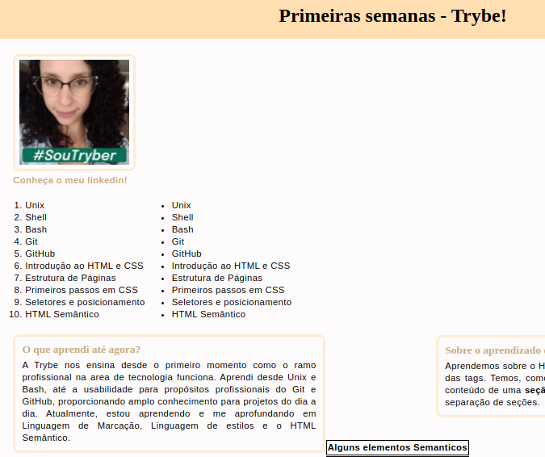
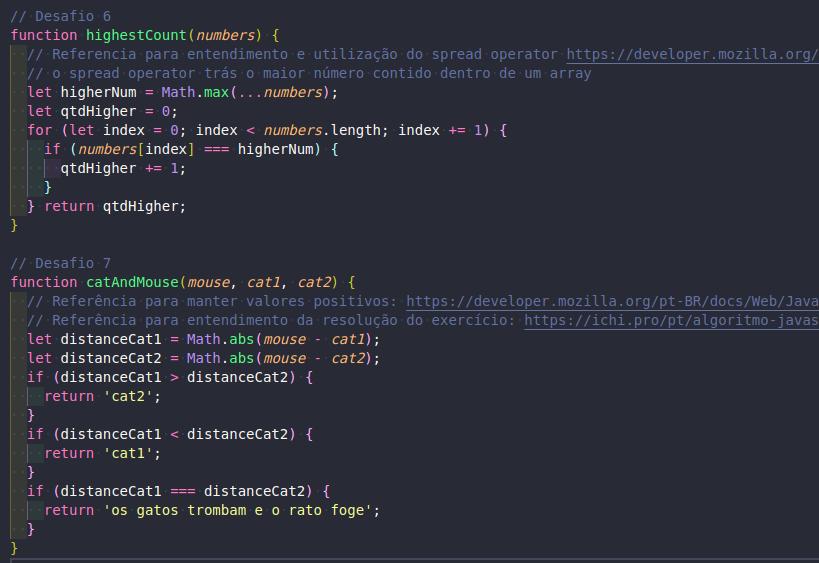
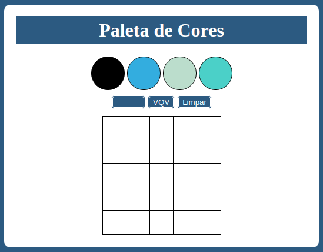
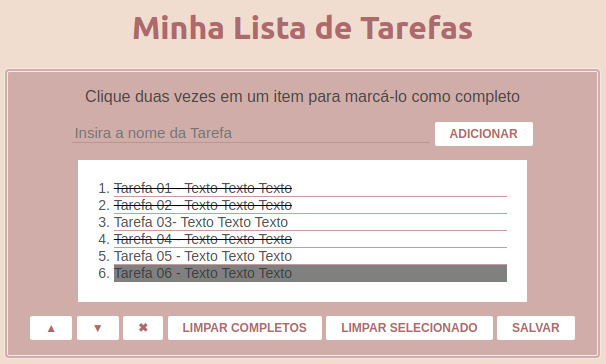
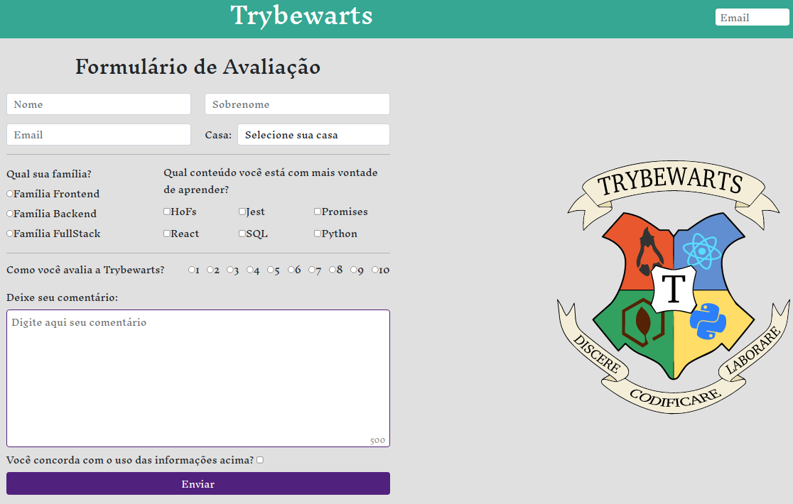

Projetos realizados durante o curso:
Introdução à HTML & CSS
Descrição: Site desenvolvido contendo informações sobre o que aprendi na Trybe ao longo dos três primeiros blocos. Foi solicitado elementos posicionados e estilizados com semântica apropriada para ser acessível e melhor ranqueado.
Introdução à JavaScript e Lógica de Programação
Descrição: Implementação de funções conforme orientações passadas pela Trybe. Foi solicitado o desenvolvimento de 13 funções que funcionassem dinamicamente.
JavaScrip: DOM, Eventos e Web Storage
Descrição: Implementação de uma página Web contendo uma paleta de cores funcional (com cores aleatórias a cada atualização da paǵina) que poderá ser utilizada para criar desenhos em pixels. Foi solicitado a utilização de JavaScript, css e Html.
JavaScrip: DOM, Eventos e Web Storage
Descrição: Criado uma lista de tarefas, com as seguintes solicitações: adicionar n tarefas, mudar o background ao selecionar uma tarefa adicionada, riscar as tarefas concluidas clicando duas vezes, mover uma tarefa para cima e para baixo com as setas, apagar apenas tarefas concluídas ou apenas tarefas selecionadas, salvar a lista de tarefas na máquina do usuário ao clicar em salvar e deletar toda a lista ao clicar no x.
HTML & CSS: Forms, Flexbox e Responsivo
Descrição: Neste projeto, foi desenvolvida uma página de formulário da Escola de Magia de Trybewarts, em que as pessoas estudantes podem enviar seus feedbacks sobre ela. O tema desse projeto é baseado na obra 'Harry Potter', de J. K. Rowling, já que programar é o mais próximo que podemos chegar de algo verdadeiramente mágico.